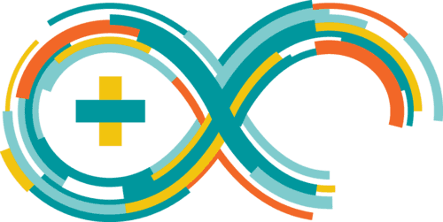
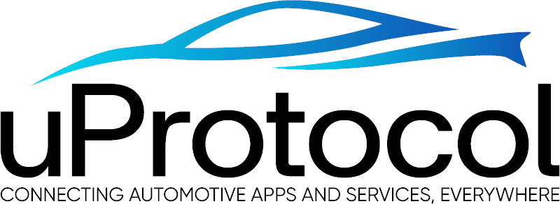

Driver Input ECUs

Joystick + RFID on Arduino publish MQTT JSON on InVehicleTopics.
Architecture, live signal flow, and workload monitoring in one screen
Based on full-architecture.puml with the demonstrator background.

Zenoh + uProtocol
Joystick + RFID on Arduino publish MQTT JSON on InVehicleTopics.
Topic router for in-vehicle MQTT transfer.
Converts MQTT payloads into Kuksa Val/Set updates.
Vehicle signal state and subscriptions.
Maps VSS signals to CAN frames and back.
MCU LED control receives command and sends status feedback.
Controls Mosquitto, bridge, CAN provider, and website workloads.
Feeds fleet demo signals into the Databroker.
Reads Databroker signals and writes fleet telemetry.
Consumes the fleet data stream in the backend stack.
Fleet dashboards and backend API views.
MQTT subscriber peer with SOME/IP state exchange.
SOME/IP peer for external button communication.
Observes the Databroker and Docker Compose runtime services.
Eclipse SDV Blueprints
Derived from communication-workflow.puml.
Driver input -> MQTT -> Bridge -> Kuksa -> CAN command
Kuksa signal set/get updates and provider synchronization
Blinker ECU status -> CAN Provider -> Kuksa consumers
Databroker -> fms-forwarder (Zenoh) -> fms-consumer/FMS Server
Ankaios control plane managing the signal workloads
Container runtime visibility and log stream observability
Main focus: MQTT transfer, Databroker signals, Ankaios workloads, and Dozzle containers.
Unknown
No probe yetUnknown
No probe yetUnknown
No probe yetUnknown
No probe yetURL not set
URL not set
| Runtime | Name | Image | Status |
|---|---|---|---|
| No data yet | |||